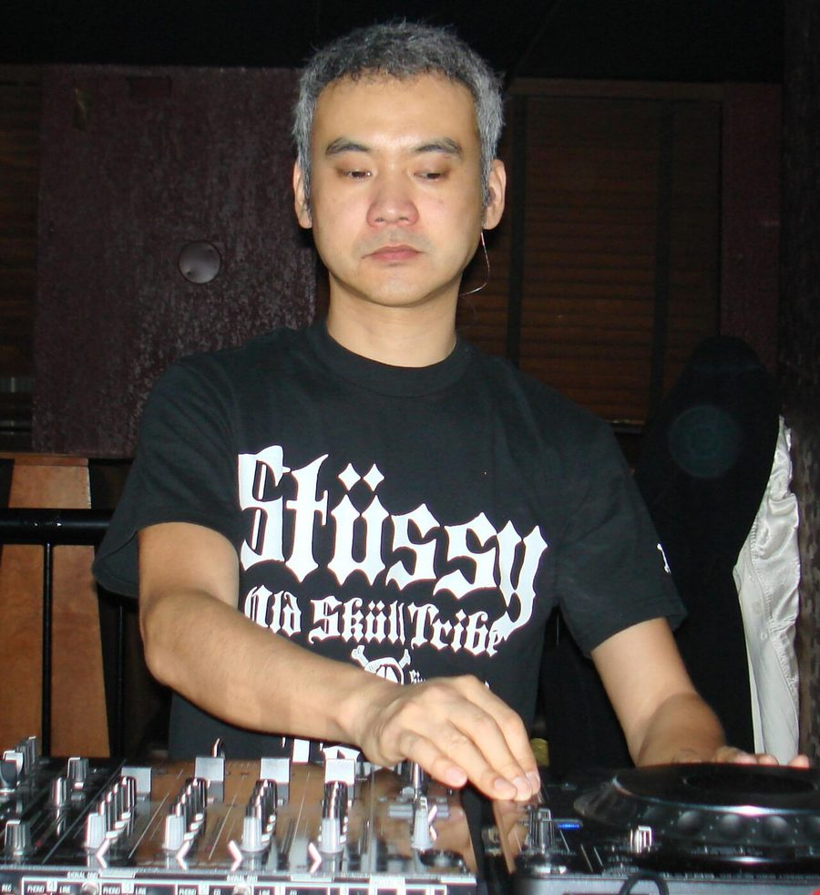

Satoshi Tomiie [Audio]: DJ master


.jpg){kind=link}
STREAMING AUDIO INTERVIEW
Since relocating from Tokyo to New York in the late 80s, Satoshie Tomiie has been an honorary member of the revered X-Mix collective of DJs and producers, standing alongside the likes of Frankie Knuckles and Armand Van Helden as a leading light on the global house scene.
Throughout the 90s and into the new millennium, he’s solidified his reputation as a world class DJ and producer, releasing a string of club classics, including ‘Love In Traffic’ and Up In Flames’, as well as many venerated mix CDs.
Last year he unleashed his most comprehensive mix to date, launching the ‘3D’ series for Renaissance. They liked what they heard, because they invited him back less than a year later to put together their latest ‘Masters Series’ release.
Preparing to visit Australia for a whirlwind visit this weekend, ITM’s Angus Paterson caught up with Satoshi as he chowed down on his dinner in NYC.
Satoshi Tomiie’s latest mix CD, ‘Renaissance pres. The Masters Series Vol 9’ is available now through Stomp. Be sure to check him out this weekend:
Fri Apr 20 – Room 680, Melbourne
Sat Apr 21 – Chinese Laundry, Sydney